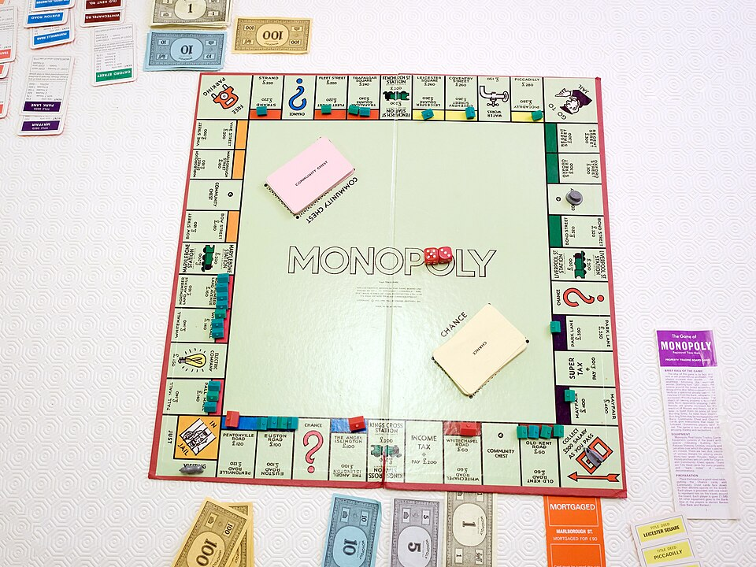

FEATURED PROJECT · TIPE 2025 TO 2026
Probabilistic Modelling and Interpretation of Monopoly Game Cycles
For my TIPE, I chose to study Monopoly. I tried to identify some of the best strategies based on the long-term probability of landing on each square. I focused on players’ positions rather than their money.
To make the model as realistic as possible, I took into account the rule that sends players to jail after rolling three consecutive doubles, the Go to Jail square, and the movements caused by Chance and Community Chest cards.
Based on these results, I assessed the profitability of each property and of buying houses and hotels. My graph suggests that, for the properties from the red group through to the dark blue group, buying more than three houses is not profitable.
